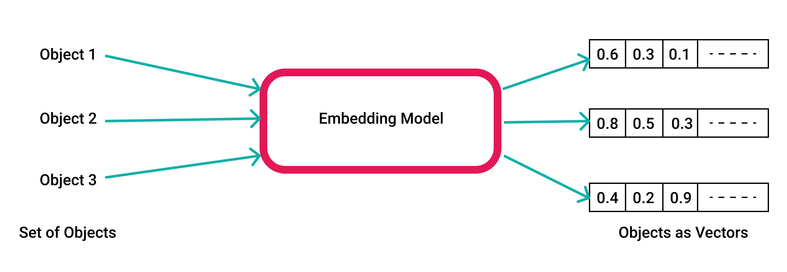
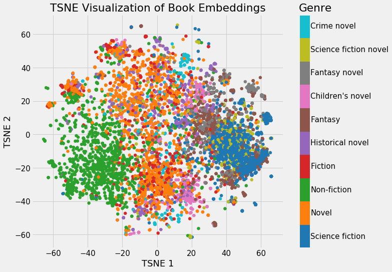

## 🦜🔗 LangChain Workshop Develop AI Application through Langchain and LLM's
## Pre-requisites - Basic Python Programming - Open AI Account - https://platform.openai.com/ to create a new account
## LLM, GPT - LLM, large language models - Trained on large corpus of text, able to generalize, and generate text. - GPT, generative, pre-trained, transformer - Generative, create it own text - Pre-trained, trained on large corpus of text - Transformer, a type of neural network architecture
## What's langchain - Framework to develop applications using LLM's - Assumes Applications are; - Data aware; can interact with various data sources - Agentic; allowing llm to interact with environment
## Some components | Component | Description | | --- | --- | | Schema | Basic data types of langchain, Text, ChatMessages, Examples, Document | | Models | LLM's, Chat Models, Text Embedding Models |
## Some components | Component | Description | | --- | --- | | Prompts | Way to program models, `PromptTemplate` responsible for construction of inputs | | Indexes | Way to structure documents, Document Loaders, Text Splitters, Vector Stores, Retrievers | - Other components; such as; Chains, Agents, Memory etc.
## Environment Setup - Install pipenv, [here](https://pipenv.pypa.io/en/latest/installation/) - Go to [openai](https://platform.openai.com/) and create a new API key
## Hello Langchain 🙋 - Create a new directory. - Start pipenv shell `pipenv shell` - Install dependencies; - `pipenv install langchain openai` - Create a new file. - Let's code. 🧑💻
## Let's try some integrations - eg; Scraping website and feeding output to LLM and asking questions on website. - eg; Summarizing a pdf document.
## 🕵️ Documentation Searching - Have a huge database. - Want to search some queries from the database. - eg; ask personalized question to notion document.
## 🕵️ Documentation Searching - any ideas?
## Embedding - Act of converting text to vectors. 

## Vector Stores <img src="images/vector-store.avif" /> - pinecone, pgvector, chromadb, faiss, lance - langchain docs [here](https://python.langchain.com/docs/modules/data_connection/vectorstores/)
## Previous demo using vector stores - coding time. 🧑💻
## Any Questions?
We have a lot of things to cover and part 2 of this workshop will cover some of the advanced topics. Thank you. 🙏